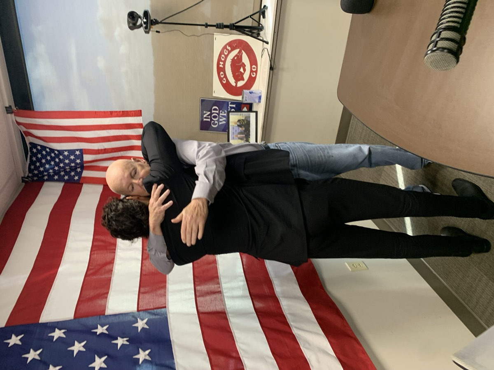

Enrico Omri Ravenna
Jewish Communal Leader
Executive Director · Jewish Federation of Arkansas
"Where there is a possibility,
there's a responsibility"
Jewish Communal Leader
Executive Director · Jewish Federation of Arkansas
"Where there is a possibility,
there's a responsibility"
The Story
01 — Soldier

I was born in Israel. I served in the IDF and was honorably discharged as a First Sergeant. That service is where I learned what accountability looks like when the stakes are real.
Everything I have built since starts there.
The Thread That Runs Through It
"My grandparents survived the Holocaust because a Catholic priest hid them from the Nazis."
That is one of many reasons I sit across the table from pastors and legislators and neighbors who do not share my faith. That is why "where there is a possibility, there's a responsibility" is not a bumper sticker. It is the only honest response to the inheritance I carry.
02 — Builder

After spending a few years in the United States I realized how important honoring the sense of community and my culture intentionally had become. This led to seeking out ways to engage and connect with others and starting my career in the Jewish nonprofit space. I started where the whole community was. At the Israeli American Council in Atlanta, I served as Activism Manager for the Southeast, mobilizing Jewish identity and civic engagement across an entire region, working with donors, organizers, and leaders across every demographic, not a single population.
Then I deliberately narrowed. As Midwest Regional Director and Associate Director of Israel Trips at Maccabee Task Force, I went deep into campuses — leading students to Israel, training the next generation in advocacy and interpersonal leadership, building from the ground up. I graduated Cum Laude in Political Science from Georgia State University. Mission and profession became the same thing.
03 — Leader
Today I lead the Jewish Federation of Arkansas. A lean team. An outsized mission. In under two years we tripled programming, rebuilt a dormant donor base, forged security partnerships across law enforcement and government, and put Arkansas on the national Jewish communal map.
The community is small. The stakes are not.

A Voice From Israel
Lt. Col. (Res.) Eyal Dror
Founder & Commander, Operation Good Neighbor
IDF Northern Command · 31 Years of Service
He is a deeply committed Zionist who understands that educating the next generation requires not only words, but presence, responsibility, and leadership.
What makes Enrico especially unique is that he is both profoundly connected to American Jewish life and genuinely Israeli in his experience and outlook, including through his meaningful military service. This rare combination enables him to understand both communities from within and to build authentic bridges between them.
Enrico is a dedicated and highly professional leader who, in my view, deserves to become one of the leading Jewish voices in the United States, and I am proud to call him my friend, to have hosted him and his family in my home, and to support the important path he is leading.
What Colleagues Say
Jordenne Parker
Associate Director
UT Austin Hillel
I've had the privilege of partnering with Enrico on multiple geopolitical trips to Israel, including leading the first Maccabee Task Force campus delegation to return after October 7.
He never asks people to stop asking hard questions. Instead, he helps them ask better ones. I've watched students leave conversations with Enrico feeling more confident in their own voices, more curious about complexity, and more willing to engage thoughtfully with their communities back on campus.
He has an extraordinary ability to balance empathy with honesty, creating spaces where students can challenge assumptions without ever feeling judged. His leadership is rooted in humility, genuine curiosity, and an unwavering belief in people's potential.
What has always stood out to me is that he doesn't seek out the easy path. He embraces challenges because he knows they are opportunities to learn, adapt, and become better. Watching that growth has been just as inspiring as experiencing the impact he has on students.
Jessie Dowsakul
Executive Director
Columbia Jewish Federation
Working with Enrico has changed the way I think about leadership.
He has an incredible ability to see potential — in organizations, in leaders, and in communities that are often overlooked. More importantly, he knows how to help people turn that potential into action.
What sets him apart is that he leads with humility. He doesn't seek recognition or try to be the loudest voice in the room. He listens first, asks thoughtful questions, and creates space for others to grow. He has a unique gift for making people feel seen, valued, and capable of accomplishing more than they thought possible.
He challenged me to think bigger, dream bolder, and never accept that being a smaller community meant we had to think small.
Enrico believes deeply in people. He believes in communities. And he believes that leadership is about lifting others up. That belief is contagious, and it has made me a better leader.
From My Team
He consistently trusted and empowered me to focus on the needs of Northwest Arkansas — and advocated successfully with the Executive Board to expand my role, allowing me to take on more meaningful work in programming, outreach, relationship-building, and long-term community engagement.
Enrico's trust-based leadership gives me the autonomy to focus on the needs of Northwest Arkansas while ensuring I have what I need to build and engage community. I believe his leadership has helped create momentum for the continued growth of Jewish life in Northwest Arkansas — and for the work our community needs and deserves.
Erin Cohen
Community Engagement Manager, Jewish Federation of Arkansas
What he brings to an organization is something that cannot be taught — he simply has it. His passion, energy, and ability to envision what is possible are both remarkable and contagious.
He approaches challenges with optimism and resilience, seeing obstacles as opportunities rather than setbacks… One of Enrico's greatest strengths as a manager is the trust he places in his team. Rather than micromanaging, he provides steadfast support, encouragement, and advocacy for his staff — ensuring employees always know they have a leader who is invested in their success.
Wendy Paquette
Office Manager, Jewish Federation of Arkansas
Voices From the Community
He is a skilled communicator and a builder of generational unity who is unafraid of hard conversations. His leadership drew out new and younger leaders who had been discounted and marginalized. He is a passionate and courageous representative of Jewish identity, of American ideals, of shared Judeo-Christian values, and of the existential necessity for a strong Israel.
Dr. Cathie Dorsch, PhD
CEO, Commission Fields · Judeo-Christian Studies & Ethics

I do not know of a more important time in my life to have such a dynamic and energetic bridge builder for the Jewish community like Enrico Ravenna.
Pastor Perry Black
Founding Pastor · Family Church Bryant
Active Work
In March 2026, Enrico was invited to the Reut USA American Jewry Un-Conference in Miami as part of AJ 2026, a gathering of national Jewish leadership focused on the decade ahead. He made the case that the future of American Jewry runs through communities like Arkansas, not only the major metros. Small communities are not the margins of the Jewish world. They are where the next chapter gets written.
View AJ 2026 photo-reut.jpg
photo-reut.jpgThe next generation of Jewish leaders is already on campus. Through Hillel at the University of Arkansas, JFAR is investing in student leaders, funding development opportunities, and building the pipeline of young people who will run Jewish communities a decade from now. We are not waiting for them to find us.
Learn More photo-campus.jpg
photo-campus.jpgI appear regularly on The Dave Elswick Show on KARK/iHeart Radio as the go-to Jewish community voice in Arkansas. Every appearance is a chance to bring Israel, antisemitism, and Jewish community life into a conversation that reaches well beyond our walls. That reach matters. Influence does not stop at the synagogue door.

photo-elswick.jpgAreas I Work In
Community Security
Emergency protocols, government grant acquisition, and security infrastructure built before something happens, not scrambled together after.
Interfaith Coalitions
Durable relationships with pastors, priests, mosques, and legislators that outlast any single program or administration.
Fundraising & Development
Rebuilding donor trust from scratch, re-engaging lapsed supporters, and finding net-new funders. Starting from a cold list with no prior pipeline.
Next-Gen Leadership
Identifying and placing emerging Jewish leaders in staff, board, and national roles. People who had never considered this path as available to them.
Israel Advocacy
Public Jewish presence, Israel education, Holocaust remembrance, and advocacy in rooms where our community is rarely represented but always discussed.
Organizational Turnaround
Coming into a community that's falling behind and building it back. Culture, governance, operations. Making a small team punch above its weight.
Who I've Walked With
institutional security partnerships built and maintained — with the Secure Community Network, the FBI, the Little Rock Police Department, and the Arkansas state legislature. Relationships, not just protocols.
Within 30 minutes of a mass shooting at a Jewish congregation in Michigan, I had activated every congregation in Arkansas, coordinated with the FBI, and ensured every Jewish institution had eyes on their doors. Then we made that response permanent.
community engagements across 18 programs in a single fiscal year — tripled from near-zero when I arrived. Because we built relationships first and let programming follow where people actually were.
newsletter open rate — more than double the 25% national nonprofit average. The number reflects one thing: I write to people, not at them.
net-new donors in our first active campaign after years of dormancy, plus 40 returning donors re-engaged. First year. No prior pipeline. No inherited list.
My Vision
I started with an entire community, narrowed into a single generation on campus, and now lead an entire state, and I'm not done growing.
There's safety in familiarity, and a great opportunity in the pursuit of it.— Enrico Omri Ravenna
Every relationship I have built started with a conversation, not a program. I go deeper with fewer people rather than wider with more. The communities that survive long-term are the ones where people actually know each other.
Good security means people still show up. They still light candles in public, still send their kids to Hebrew school, still celebrate in community. Fear wins the moment people stop gathering. My job is to make sure that never happens.
The next generation does not need to earn their seat at the table. They are already doing the work. Give them real responsibility and they will run with it. I have watched it happen. That is what I keep building toward.
"Where there is a possibility, there's a responsibility."— Enrico Omri Ravenna
From LinkedIn
Security
Let's Connect
If you're working on something serious in the Jewish nonprofit space, I want to hear about it.